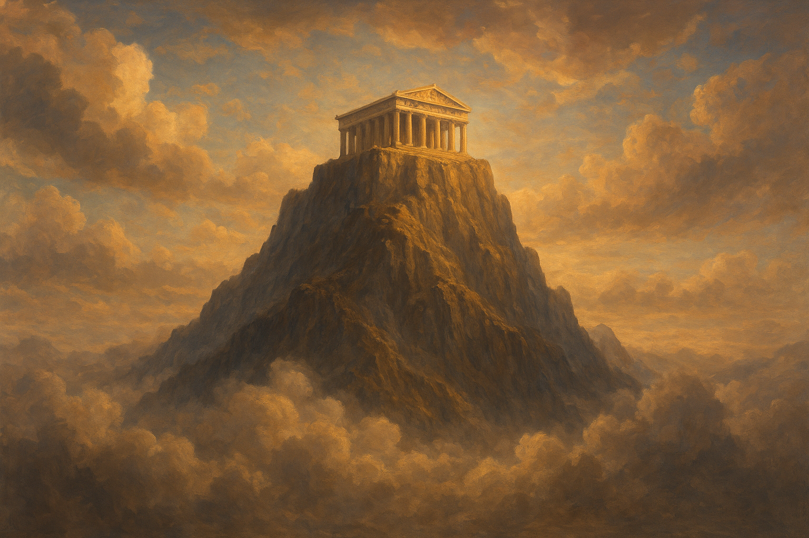

Zeus, o Rei do Olimpo

Zeus é o rei dos deuses gregos, senhor do céu e do trovão. Filho de Cronos e Reia, derrotou o pai para governar o Monte Olimpo. É símbolo de poder, justiça e autoridade.
A mitologia grega é um conjunto de histórias e crenças criadas pelos antigos gregos para explicar a origem do mundo, os fenômenos da natureza e o comportamento humano. Ela é repleta de deuses poderosos, heróis corajosos e criaturas fantásticas, que representam virtudes, falhas e emoções humanas. Influenciou profundamente a arte, a literatura e toda a cultura ocidental.
O Monte Olimpo é conhecido como o lar majestoso dos deuses da mitologia grega, um lugar que mistura mistério, poder e imaginação. Para os antigos gregos, ele não era apenas uma montanha comum — era o centro do divino, o ponto mais alto entre o mundo dos mortais e o reino espiritual.

Zeus é o rei dos deuses gregos, senhor do céu e do trovão. Filho de Cronos e Reia, derrotou o pai para governar o Monte Olimpo. É símbolo de poder, justiça e autoridade.
Poseidon é o deus dos mares, tempestades e terremotos. Irmão de Zeus e Hades, empunha seu tridente e controla os oceanos. É símbolo de força e instabilidade.
Hades é o deus do submundo e senhor dos mortos na mitologia grega. Irmão de Zeus e Poseidon, governa o reino dos espíritos com rigor e justiça, garantindo que cada alma receba seu destino. É símbolo do mistério, poder e equilíbrio entre vida e morte, representando o lado inevitável e silencioso da existência.
Hera é a majestosa rainha do Olimpo, deusa do casamento e da fidelidade, marcada por sua força, orgulho e ciúme diante das traições de Zeus. Símbolo da mulher poderosa e vingativa, ela representa a dignidade e o poder feminino entre os deuses.
Deméter é a deusa da agricultura e das colheitas, símbolo da fertilidade da terra e do amor materno. Sua dor pela perda da filha Perséfone fez surgir as estações do ano, marcando seu poder sobre o ciclo da vida e da natureza.
Atena é a deusa da sabedoria e da estratégia, símbolo da razão, coragem e justiça. Nascida da cabeça de Zeus, representa o equilíbrio entre força e inteligência
A mitologia grega é povoada por criaturas extraordinárias — seres que habitam o limite entre o divino e o mortal. Cada uma carrega simbolismos profundos sobre coragem, destino e medo.
Antiga sacerdotisa de Atena, Medusa foi amaldiçoada e transformada em uma criatura com cabelos de serpente e um olhar capaz de transformar em pedra qualquer um que a encarasse. Mais do que um monstro, ela simboliza a punição divina, o poder feminino temido e a beleza corrompida pelos deuses.
Nascido da união profana entre Pasífae e um touro sagrado de Poseidon, o Minotauro foi aprisionado no Labirinto de Creta, construído por Dédalo. Alimentava-se de carne humana até ser derrotado por Teseu. Ele representa o caos interior do homem, a fera que habita dentro da razão
Criatura aquática de múltiplas cabeças, a Hidra renascia mais forte a cada golpe — pois, ao se cortar uma cabeça, duas outras cresciam em seu lugar. Derrotada por Hércules, tornou-se o símbolo da persistência do mal e da luta contra o impossível.
Metade homem, metade cavalo, os centauros oscilavam entre a sabedoria e a selvageria. Enquanto muitos se entregavam aos instintos e ao vinho, Quíron — o mais nobre entre eles — tornou-se mestre de heróis como Aquiles, simbolizando o equilíbrio entre a natureza e o espírito.
Criaturas ligadas ao deus Dionísio, com corpo de homem e pernas de bode. Viviam entre florestas, vinhos e danças, representando o prazer, a fertilidade e a natureza indomável. Alegres e travessos, os sátiros eram a personificação da liberdade dos instintos.
Seres alados com rosto de mulher e corpo de ave, as Harpias eram mensageiras da vingança divina. Rápidas e impiedosas, roubavam e castigavam os mortais que ofendiam os deuses. Seu nome se tornou sinônimo de tormento e fúria celestial
As relíquias dos deuses gregos eram artefatos lendários imbuidos de poder celestial. Cada uma carregava a essência, a história e a autoridade de seu deus original — desde armas forjadas por seres míticos até objetos capazes de controlar a natureza, o destino e até a própria vida. Representavam força, proteção e o elo entre o mundo mortal e o divino.

O Raio Mestre é a arma suprema de Zeus, o próprio poder do céu concentrado em uma única relíquia divina. Forjado pelos gigantes Ciclopes no coração das forjas primordiais, ele carrega a fúria das tempestades, o brilho do relâmpago e o som que faz o mundo estremecer. Mais do que uma arma, o Raio Mestre é o símbolo absoluto da autoridade de Zeus sobre deuses e mortais, representando justiça, poder e o domínio celestial..
O Tridente Sagrado é a arma lendária de Poseidon, o deus dos mares. Forjado pelos Ciclopes, ele concentra a força bruta dos oceanos e o poder imprevisível das tempestades. Com um único movimento, Poseidon é capaz de erguer ondas gigantes, provocar tempestades devastadoras e até desencadear terremotos que racham a terra. Mais que uma arma, o Tridente é o símbolo absoluto da autoridade do deus sobre todas as águas e sobre o próprio equilíbrio do mundo.

O Elmo da Invisibilidade, forjado pelos Ciclopes, é a relíquia sombria que concede ao seu portador a capacidade de desaparecer até mesmo diante dos olhos dos deuses. Usado por Hades, ele envolve o usuário em sombras profundas, permitindo atravessar o mundo oculto sem ser percebido. É um símbolo de mistério, sigilo e domínio sobre aquilo que permanece invisível.
A Égide é o escudo divino mais temido da mitologia grega, adornado com a cabeça da Medusa, cujo olhar ainda carrega o poder de espalhar terror. Usada por Zeus e Atena, ela não é apenas uma defesa, mas um símbolo de autoridade e força absoluta. Onde a Égide aparece, o medo domina, a batalha muda — e o poder dos deuses se impõe.
A Lança e a Espada da Guerra são as armas divinas de Ares, cada uma pulsando com a essência da batalha. Forjadas para amplificar a ferocidade, a força e o caos do combate, elas transformam qualquer confronto em um campo dominado pela violência e pelo ímpeto do deus da guerra. Onde essas armas brilham, a fúria de Ares se manifesta sem limites.

O Cinto de Afrodite é uma relíquia envolta em magia e sedução, capaz de conceder um charme irresistível a quem o usa. Portador do fascínio da deusa do amor, ele desperta desejo, beleza e encanto sobrenatural, influenciando corações e moldando destinos com a força sutil do desejo divino.